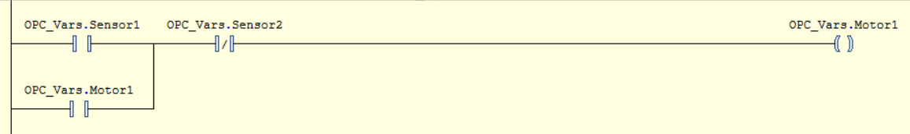
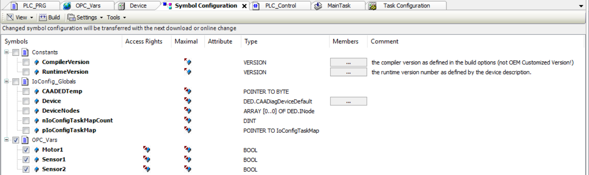
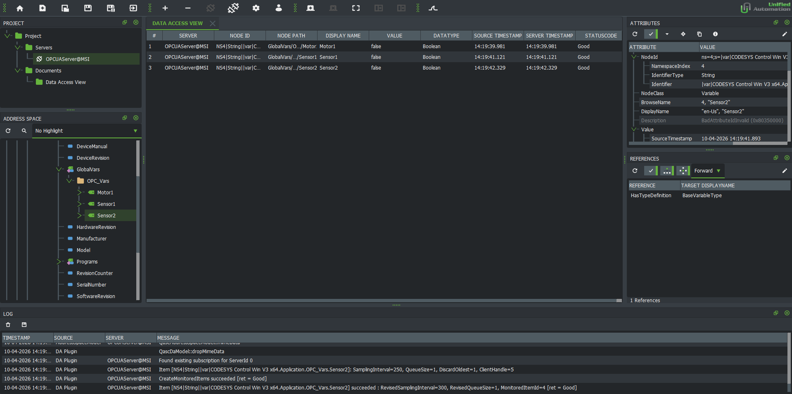

Project Case Study
Conveyor Control System
A control-oriented automation project demonstrating sensor-based conveyor sequencing, real-time OPC UA communication, and process visualisation through a Unity simulation linked to a Virtual PLC in CODESYS. This project was built to reflect industrial automation concepts such as PLC-style logic, HMI-oriented interaction, and system integration across control and software environments.
PLC Logic
OPC UA
HMI / SCADA
System Integration
CODESYS
Unity
My Contribution
Why I built this project
I built this project to demonstrate practical industrial automation and controls concepts through a complete working system. The objective was to create a conveyor workflow that combines PLC-style control logic, real-time OPC UA communication, and process visualisation in a way that reflects the structured problem solving required in automation, controls integration, testing, and debugging roles.
System Overview
How the control sequence works
This workflow shows how sensor input, PLC-style logic, and conveyor motion interact in a repeatable automation sequence.
1
Box reaches Sensor 1
The box enters the conveyor zone and activates the first sensor.
Input
2
Sensor 1 changes state
The sensor status updates and sends the signal to the control logic.
Input
3
Start logic is triggered
PLC-style logic evaluates the signal and starts the conveyor sequence.
Logic
4
Conveyor moves forward
The conveyor motor runs and moves the box toward the second sensor.
Action
5
Box reaches Sensor 2
The box reaches the target position and activates the second sensor.
Input
6
Stop logic is triggered
The control logic responds to Sensor 2 and issues the stop command.
Logic
7
Conveyor stops
The system stops movement and completes the cycle in a controlled, repeatable way.
Output
My Contribution
What I built and implemented
I designed and implemented the full project workflow, including the Unity-based conveyor simulation, the CODESYS control logic, and the OPC UA communication between both systems. My work involved defining the sensor sequence, managing conveyor start and stop behaviour, synchronising simulation and control states, and testing the system to ensure reliable and repeatable operation.
- Built the Unity simulation to visualise conveyor movement, box position, and sensor interaction.
- Implemented control logic in CODESYS to handle sensor-based start/stop sequencing.
- Configured OPC UA communication between the simulation layer and the control layer.
- Tested and debugged signal flow, state transitions, and conveyor response.
- Structured the project to reflect industrial automation concepts such as PLC-style logic and HMI-oriented process visualisation.
Control Logic
Control logic implementation in CODESYS
The conveyor sequence was implemented in CODESYS using PLC-style control logic to manage sensor input, motor start/stop behaviour, and repeatable system sequencing. The logic was designed to respond to sensor state changes in a controlled and deterministic way, ensuring that the conveyor only runs when the correct conditions are met and stops when the box reaches the target position.
- Sensor inputs were used to detect box position and trigger the start and stop conditions for the conveyor.
- The control logic handled the sequence in a repeatable way to ensure reliable system behaviour.
- Motor operation was tied directly to sensor state transitions and control conditions defined in CODESYS.
- The implementation reflects PLC-style sequencing, structured logic design, and practical automation thinking.
- The logic was tested to verify correct response, state handling, and controlled stopping behaviour.

Ladder Logic Diagram: This ladder logic implements the conveyor start/stop sequence using two sensor inputs and a motor output. Sensor 1 initiates conveyor movement, while Sensor 2 stops the system once the box reaches the target position.
Industrial Communication
OPC UA communication between Unity and CODESYS
OPC UA was used as the communication layer between the Unity simulation and the CODESYS control logic. This allowed sensor states, motor commands, and system behaviour to remain synchronised in real time, creating a connected workflow between the visual simulation layer and the control layer.
- Configured OPC UA communication to exchange data between Unity and CODESYS in real time.
- Used shared variables to link sensor input states and conveyor control behaviour across both environments.
- Ensured that changes in control logic were reflected in the simulation, and that simulation events could be processed by the control layer.
- Demonstrated practical system integration between a software-based visualisation environment and PLC-oriented logic.

Symbol Configuration: CODESYS exposes the Sensor1, Sensor2, and Motor1 variables through OPC UA, enabling real-time communication between Unity and the control logic.
Testing and Debugging
Validating system behaviour and OPC UA communication
Testing and debugging were an important part of the project to ensure that both the conveyor sequence and the OPC UA communication behaved reliably. The OPC UA connection was first validated using UaExpert to confirm that mapped variables in CODESYS could be monitored and exchanged correctly. Once the communication layer was verified, Unity was integrated to replace UaExpert as the client-side visualisation and interaction layer, allowing the full workflow to be tested end to end.
- Used UaExpert to test and validate the OPC UA connection before integrating the Unity simulation.
- Verified that mapped variables such as sensor states and motor output could be exchanged correctly through OPC UA.
- Confirmed that Sensor 1 triggered the conveyor start sequence when the box entered the detection zone.
- Tested that Sensor 2 correctly stopped the conveyor once the box reached the target position.
- Debugged logic flow and state transitions to ensure the conveyor only operated under the intended conditions.
- Replaced UaExpert with Unity after communication was validated, then tested the complete end-to-end system for stable and repeatable behaviour.

UA Expert: This UaExpert view was used to verify that the mapped CODESYS variables were accessible through OPC UA and updating correctly before Unity was connected as the client-side visualisation layer.
Project Relevance
What this project demonstrates
This project demonstrates practical skills relevant to industrial automation and controls roles, including PLC-style logic development, OPC UA-based communication, HMI-oriented process visualisation, system integration, and structured testing of real-time behaviour. It reflects the type of problem solving and implementation approach required in automation, commissioning, and control-system support environments.
- PLC-style control logic for sensor-based sequencing and conveyor behaviour.
- OPC UA communication between the control layer and the simulation layer.
- HMI-oriented visualisation through a Unity-based process interface.
- End-to-end system integration across logic, communication, and process behaviour.
- Testing and debugging of sensor response, motor control, and runtime state transitions.
- A practical automation project aligned with controls, integration, and commissioning-oriented roles.